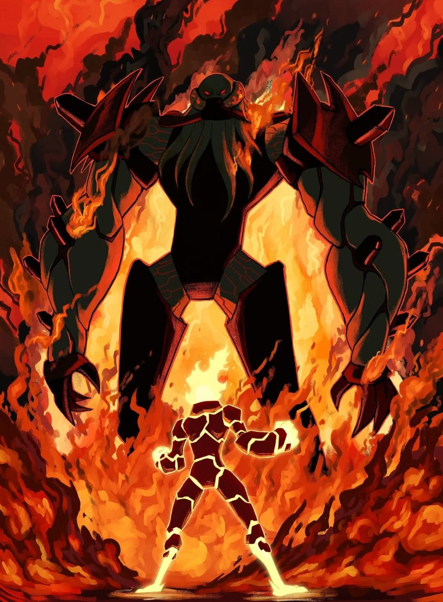
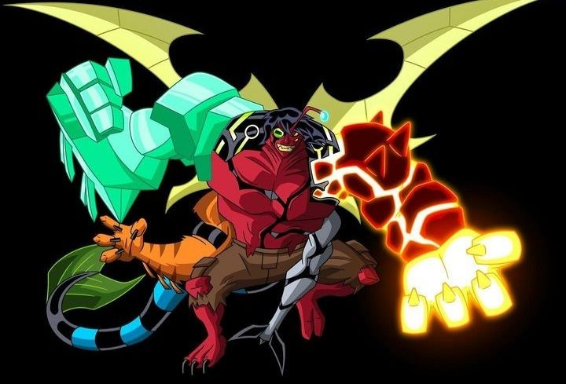
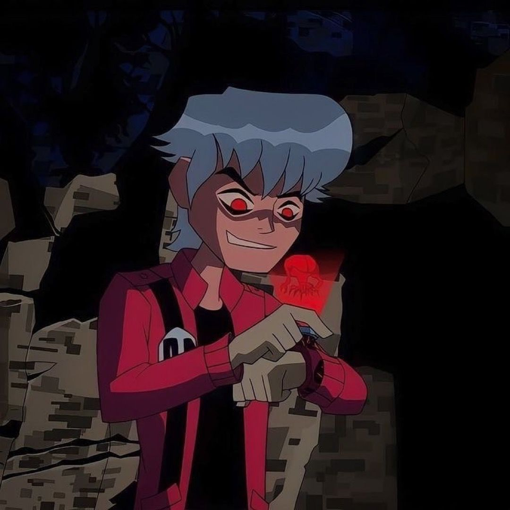

Inimigos do Portador

VILGAX
NÍVEL GALÁTICO
O conquistador de mundos e principal inimigo de Ben.

KEVIN 11
NÍVEL ALTO
Capaz de absorver energia e os poderes do Omnitrix.

ALBEDO
NÍVEL GALÁTICO
Possui um conhecimento técnico quase idêntico ao do criador do Omnitrix, o que o torna uma das maiores ameaças intelectuais do universo.